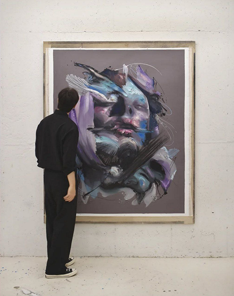
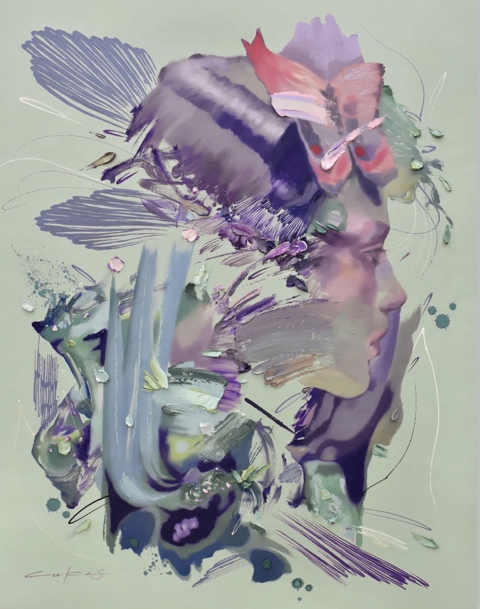
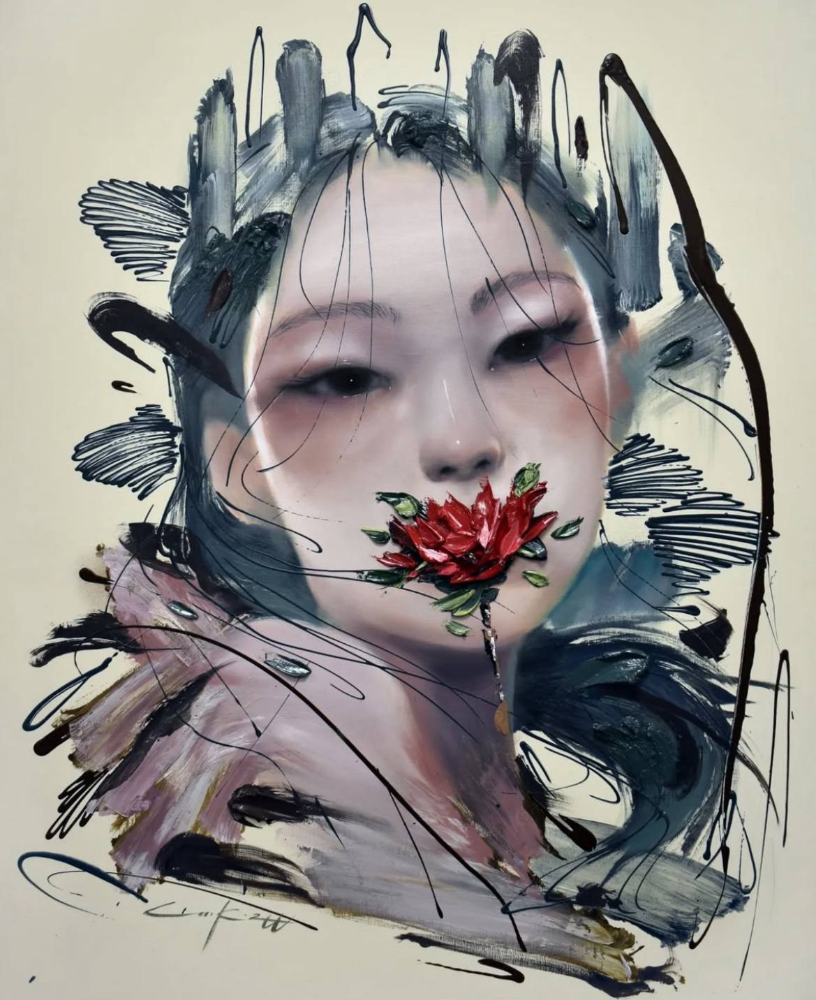
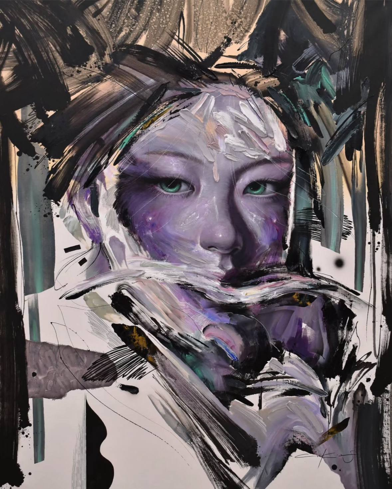
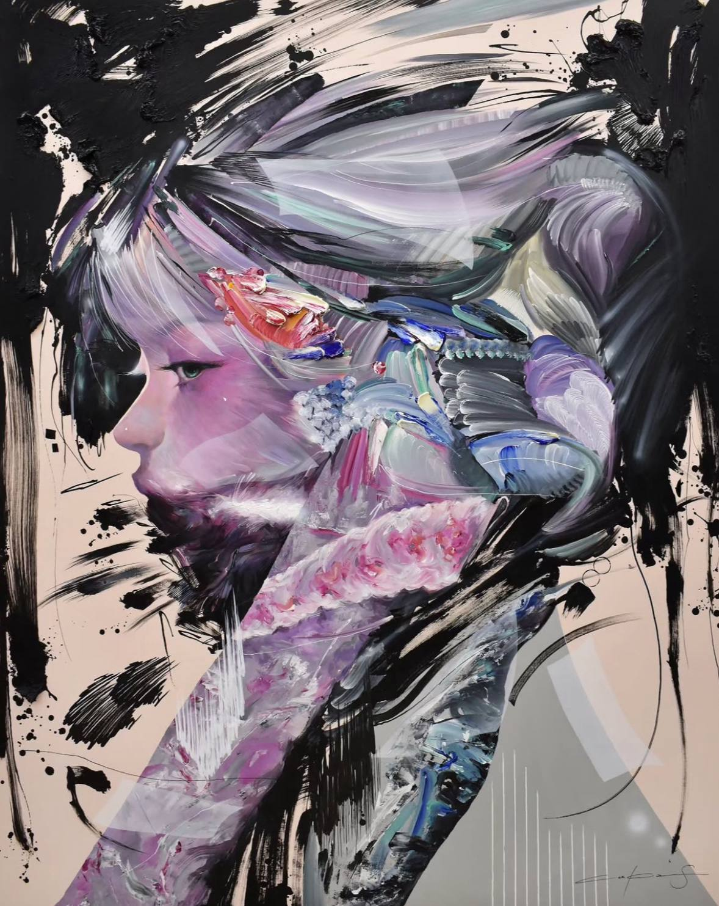
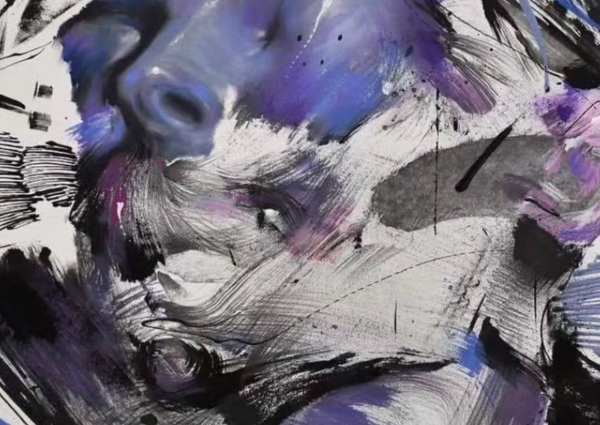
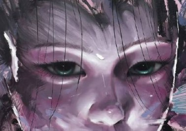

Приглашаем вас в тихое пространство, созданное художником Lee.K. Эта выставка — не громкий манифест, а протянутая рука, взгляд, полный понимания, и тихое созерцание. Основной месседж работ Lee — утешение. В суете и шуме современного мира его искусство становится убежищем, где эмоции говорят громче слов.
Материалы как проводники чувств Путь к утешению Lee.K прокладывает с помощью классических, почти аскетичных средств: карандаш, уголь, тушь, масляные краски. Каждая техника выбрана не случайно. Нежная серебристая дымка графитного карандаша, глубокий бархат угля, резкая четкость туши и чувственная глубина масла — все они работают на создание особой, тактильной тишины, в которой рождается диалог между зрителем и изображением.




Центральным элементом художественного языка Lee.K является его авторская концепция «Без языка».
Присмотритесь к портретам: лица на них часто лишены рта. Этот сознательный отказ — не отрицание общения, а его углубление.


Акцент, который художник делает вместо речи, — это глаза. Именно в них заключена вся палитра человеческих состояний: тихая печаль, хрупкая надежда, глубокая усталость или покой.
Глаза на портретах Lee.K не просто смотрят — они видят и чувствуют. Они становятся тем самым мостом, который словам построить подчас не под силу.
Через этот безмолвный диалог взглядов и рождается то самое утешение — чувство, что тебя понимают без единого слова.
Каждая работа Lee.K — это диалог, который начинается в тишине. Мы приглашаем вас стать частью этого диалога.
Авторские экскурсии позволяют глубже понять художественный язык Lee.K. Погружение происходит в формате камерного диалога.
пр. Ленина, 15, Чебоксары